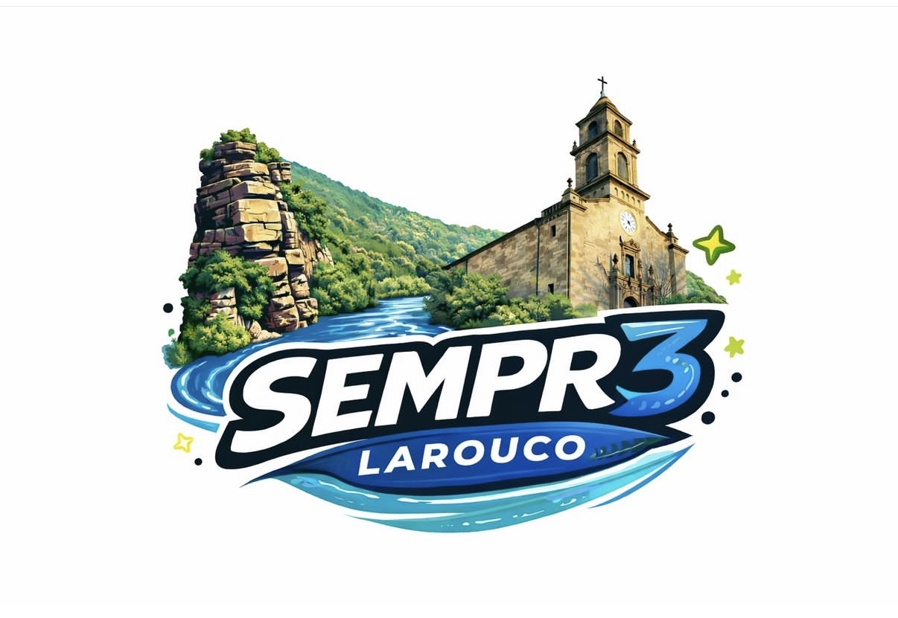
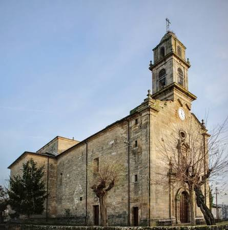
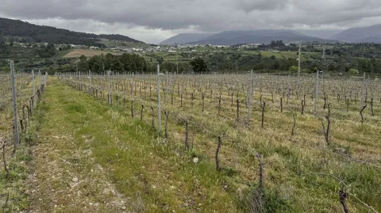
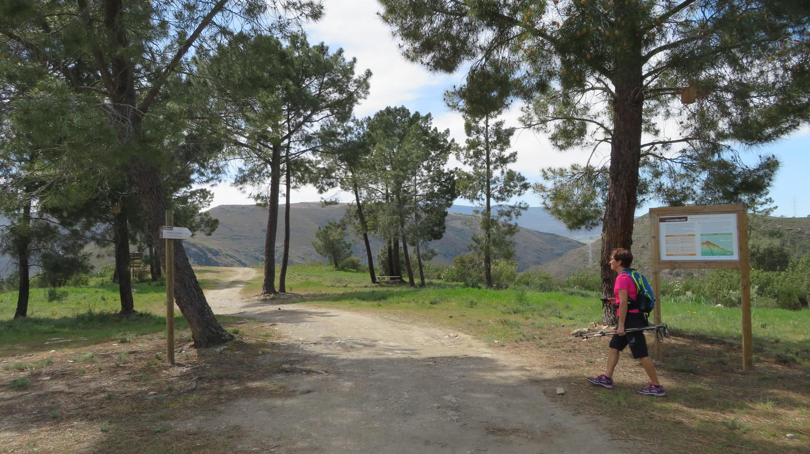
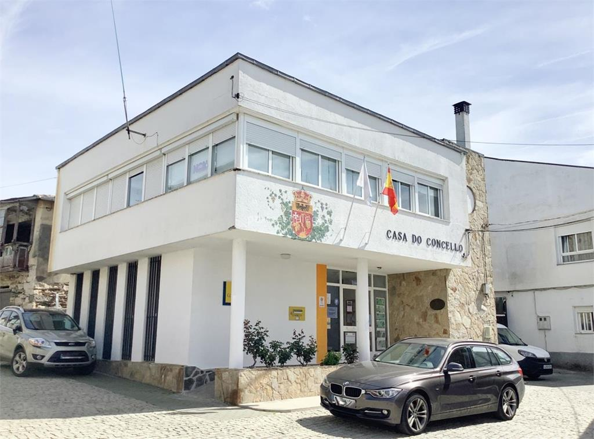
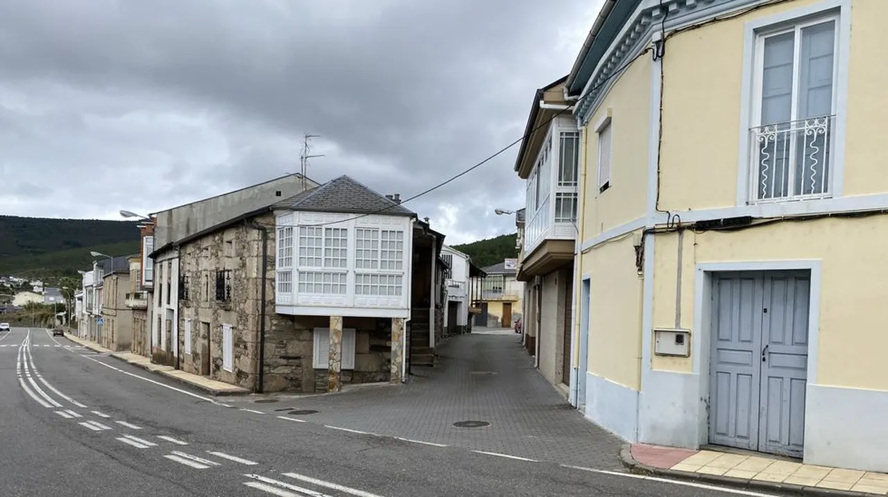
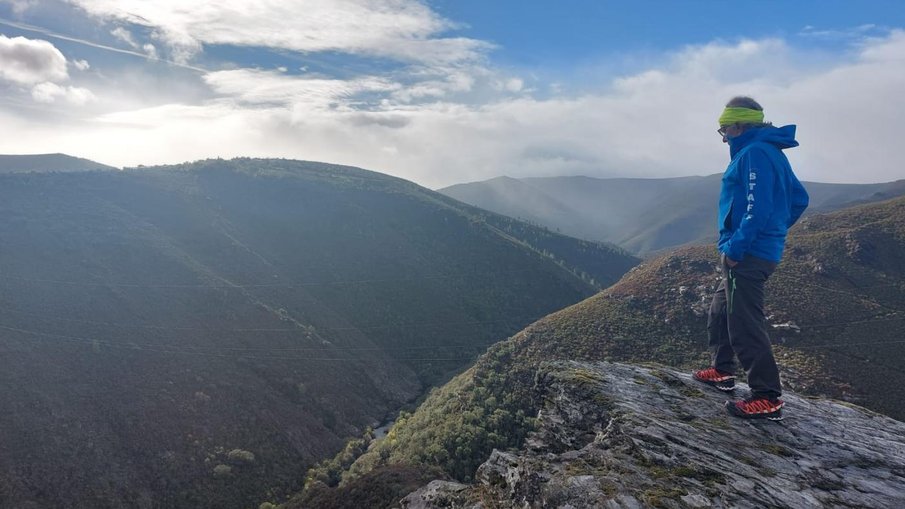
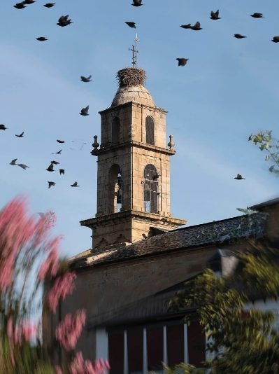

SEMPR3 LAROUCO é unha asociación dedicada á promoción do patrimonio, da cultura, da natureza e do enoturismo no Concello de Larouco.

Igrexas, arquitectura e historia.

A Ruta das Adegas de Larouco.

Rutas e miradoiros espectaculares.
VITIS LUMEN é a Ruta das Adegas de Larouco. Un percorrido entre viñedos, historia, tradición e viños únicos que representan a esencia do noso concello.
Coñecer a RutaDescubre a riqueza histórica e cultural do Concello de Larouco.


Larouco ofrece paisaxes únicas, rutas de sendeirismo e miradoiros espectaculares sobre o Canón do Bibei.
Descubrir rutas

Descubre Larouco, o corazón da Ribeira Sacra ourensá.
📍 Larouco, Ourense
📧 info@sempr3larouco.gal
📞 +34 988 000 000
Abrir en Google Maps